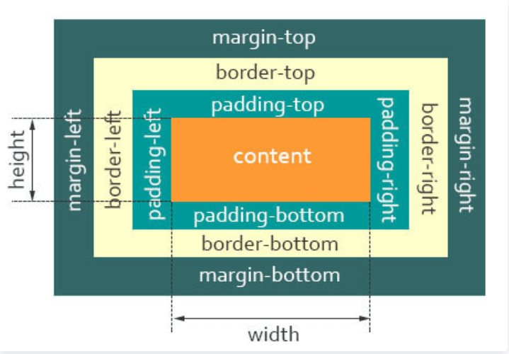
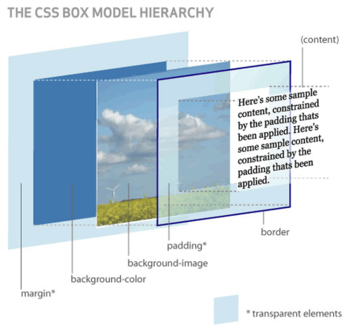
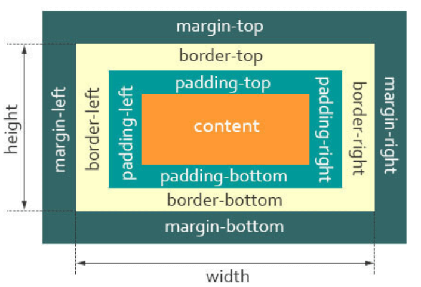

说说你对盒子模型的理解
参考答案
一、是什么
当对一个文档进行布局（layout）的时候，浏览器的渲染引擎会根据标准之一的 CSS 基础框盒模型（CSS basic box model），将所有元素表示为一个个矩形的盒子（box）
一个盒子由四个部分组成：content、padding、border、margin

\r\n\r\ncontent，即实际内容，显示文本和图像
boreder，即边框，围绕元素内容的内边距的一条或多条线，由粗细、样式、颜色三部分组成padding，即内边距，清除内容周围的区域，内边距是透明的，取值不能为负，受盒子的background属性影响margin，即外边距，在元素外创建额外的空白，空白通常指不能放其他元素的区域
上述是一个从二维的角度观察盒子，下面再看看看三维图：

下面来段代码：
<style>
.box {
width: 200px;
height: 100px;
padding: 20px;
}
</style>
<div class=\"box\">
盒子模型
</div>当我们在浏览器查看元素时，却发现元素的大小变成了240px
这是因为，在CSS中，盒子模型可以分成：
- W3C 标准盒子模型
- IE 怪异盒子模型
默认情况下，盒子模型为W3C 标准盒子模型
二、标准盒子模型
标准盒子模型，是浏览器默认的盒子模型
下面看看标准盒子模型的模型图：

从上图可以看到：
- 盒子总宽度 = width + padding + border + margin;
- 盒子总高度 = height + padding + border + margin
也就是，width/height 只是内容高度，不包含 padding 和 border 值
所以上面问题中，设置width为200px，但由于存在padding，但实际上盒子的宽度有240px
三、IE 怪异盒子模型
同样看看IE 怪异盒子模型的模型图：

从上图可以看到：
- 盒子总宽度 = width + margin;
- 盒子总高度 = height + margin;
也就是，width/height 包含了 padding 和 border 值
Box-sizing
CSS 中的 box-sizing 属性定义了引擎应该如何计算一个元素的总宽度和总高度
语法：
box-sizing: content-box|border-box|inherit;- content-box 默认值，元素的 width/height 不包含padding，border，与标准盒子模型表现一致
- border-box 元素的 width/height 包含 padding，border，与怪异盒子模型表现一致
- inherit 指定 box-sizing 属性的值，应该从父元素继承
回到上面的例子里，设置盒子为 border-box 模型
<style>
.box {
width: 200px;
height: 100px;
padding: 20px;
box-sizing: border-box;
}
</style>
<div class=\"box\">
盒子模型
</div>这时候，就可以发现盒子的所占据的宽度为200px